Set Up and Invite
Set Up and Invite¶
This page shows every step, from the first phone to the rest of the family. The screenshots follow a made-up person, Alex, from a parent's phone and a grandparent's phone.
You need a running hub (see Get a Hub) and, on every phone, LoopFollow with LF Hub on iOS 26 or newer.
Part 1: The first phone (admin)¶
Use a phone where LoopFollow already shows the glucose data: Nightscout and/or Dexcom Share work, and an APN key is set under Settings → APN. The hub takes the data source from this phone.
Open LF Hub¶
Tap Menu → Settings → LF Hub. It is the last row under Data Settings.
The page has two parts. Join with Invite is for family members. Set Up as Owner is for you, and makes this phone an admin.
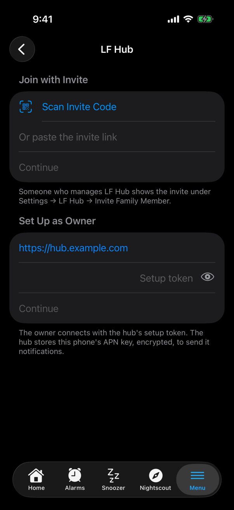
Enter the hub's address and setup token¶
Under Set Up as Owner:
- Enter the hub's address, for example
https://hub.example.com. Your provider gives it to you, or it is the address you set up yourself. - Enter the setup token.
- Tap Continue.
- On a new hub, enter the name of the person you follow and a name for this phone. Everyone who manages the hub sees the phone's name in the list of phones.
- Tap Connect.
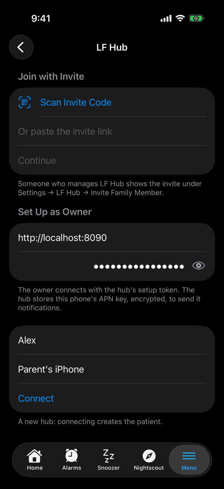
Keep the setup token secret
Anyone with the setup token can join as an admin, take over any phone on the hub and read the person's data source settings. Don't give it to family members. They join with an invite instead.
The screenshots on this page come from a test hub on a computer, so the address is http://localhost:8090. Your hub's address starts with https://.
Use LF Hub for Background Refresh¶
LoopFollow asks if the hub should take over. Tap Use LF Hub. You can change this later under Settings → Background Refresh.
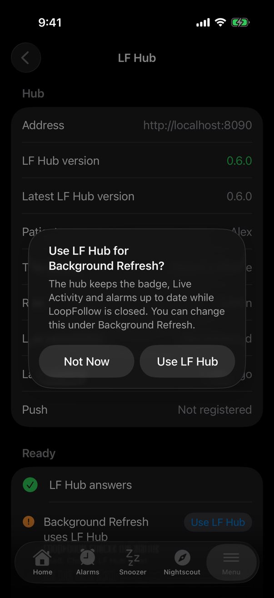
Let alarms ring through silent mode¶
iOS asks if LoopFollow may schedule alarms. Tap Allow. This lets the hub's alarms ring when the phone is silenced or a Focus is on.
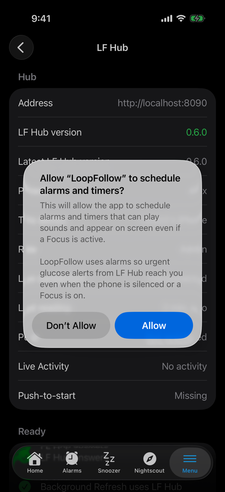
Work through the Ready list¶
The LF Hub page now shows the hub, the person you follow and this phone. Scroll down to the Ready list. Each row turns green when it is done:
- LF Hub answers
- Background Refresh uses LF Hub
- Notifications allowed
- Alarms ring through silent mode
- Live Activity on
- APN key added (or APN key shared by an admin on a family member's phone)
- Notifications from LF Hub arrive
- LF Hub reads Alex's data
- LF Hub sends this phone's alarms
A row that is not done says what is missing, often with a button that fixes it.
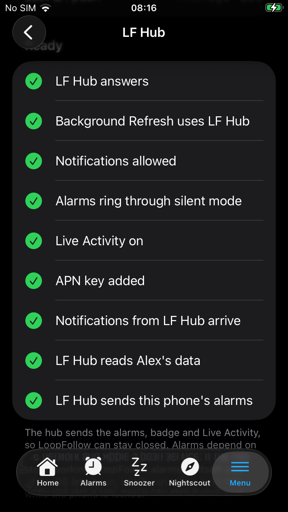
Test it¶
When every row is green, tap Send Test Alarm in 30 s under Hub Mode and lock the phone right away. After 30 seconds the alarm should ring on the locked phone, even with the phone silenced. Slide to stop it.
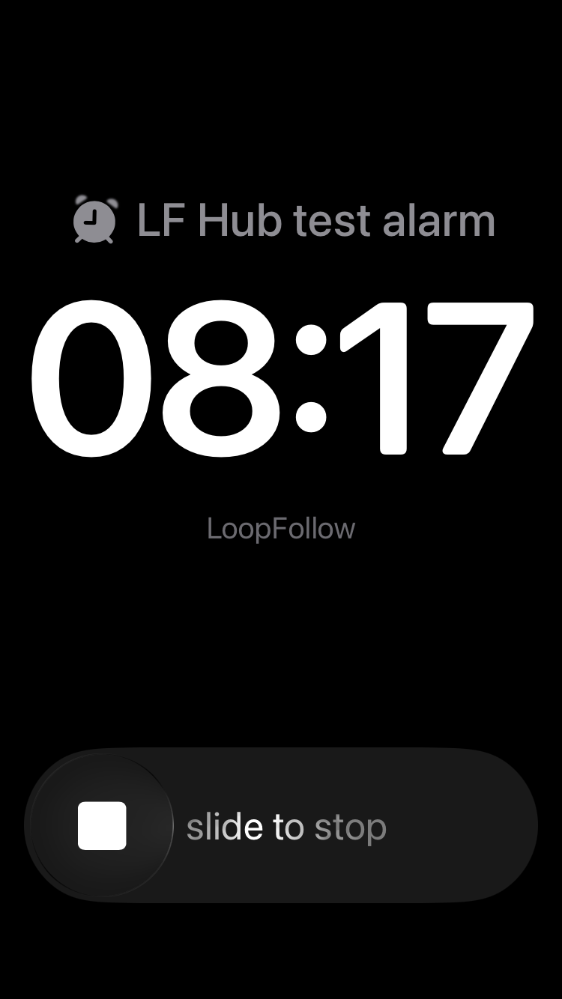
Part 2: Invite a family member¶
Each invite lets one more phone follow the same person. The invite works once and for 24 hours. Make a new one for each phone.
Make an invite on an admin's phone¶
On an admin's LF Hub page, tap Invite Family Member. A QR code appears.
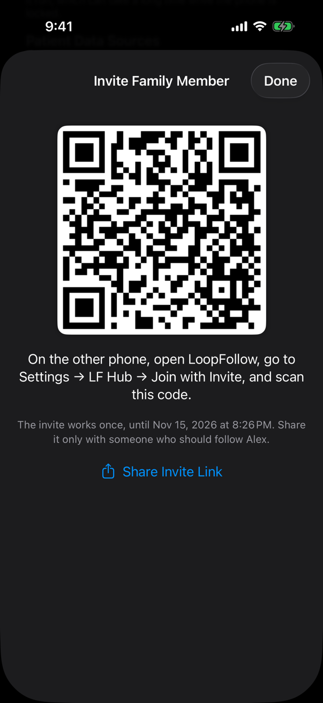
- If the family member is with you, let their phone scan the code.
- If not, tap Share Invite Link and send the link in a private message. Share it only with someone who should follow this person.
Part 3: The family member's phone¶
A family member can join when LoopFollow starts for the first time, as shown here, or later under Settings → LF Hub → Join with Invite.
Choose Join a Family Hub¶
On the Choose a data source step, choose Join a Family Hub and tap Continue.
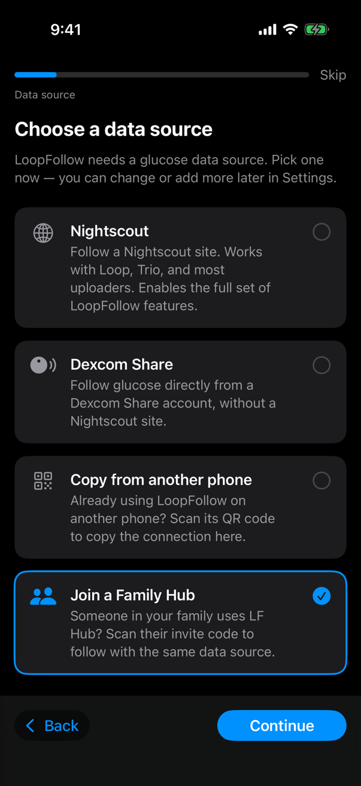
Scan the invite¶
Tap Scan Invite Code and point the camera at the QR code on the admin's phone. If you got the invite as a link, paste it in the field instead. Tap Continue.
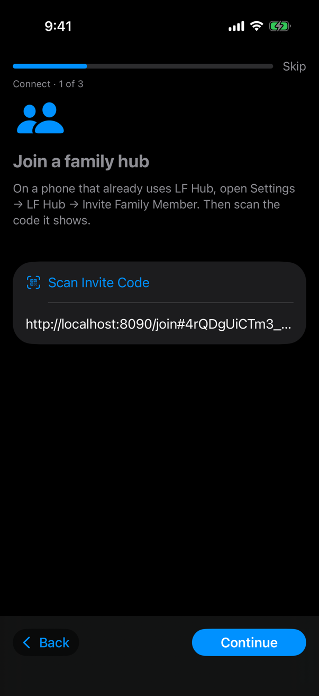
Choose how this phone joins¶
The phone shows which hub and which person the invite is for. Only join a hub you know.
- Copy settings from … starts with the same alarms and settings as that phone.
- Replace … is for a phone you no longer use. This phone takes over that phone's alarms and settings, and the hub stops recognizing the old phone. If the old phone was used in the last 15 minutes, LoopFollow asks first, since it may still be in use. A phone that joins with an invite cannot replace an admin's phone, so this choice only appears for members' phones.
- Start fresh gives this phone its own alarms, which you choose in the next steps.
Joining later under Settings → LF Hub → Join with Invite offers the same choices, named Copy Settings from …, Replace … and New Device.
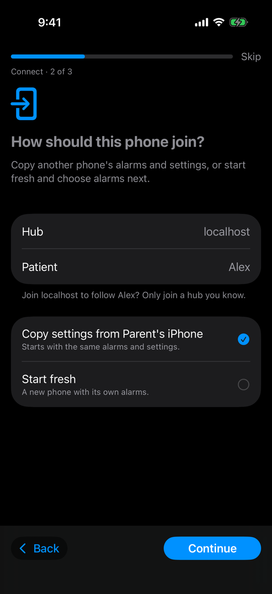
Name this phone¶
Enter a name that tells the admins whose phone it is, and tap Join.
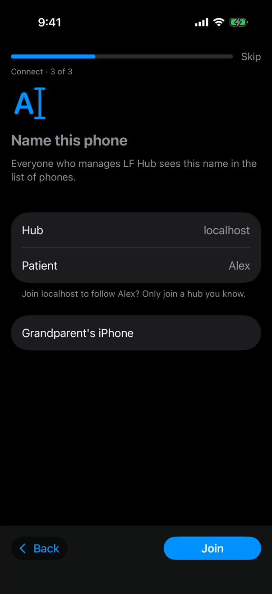
Let LF Hub reach you¶
The last step lists the permissions the hub needs on this phone. Tap Allow or Turn On on each row. iOS asks for each permission. Tap Allow.
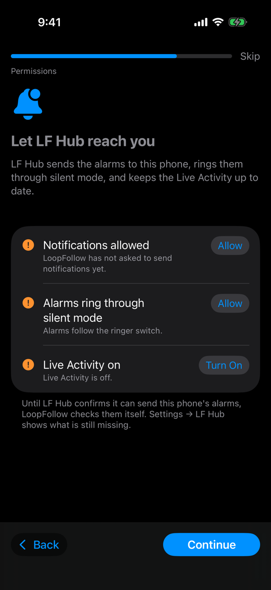
When all three rows are green, tap Continue. LoopFollow switches Background Refresh to LF Hub.
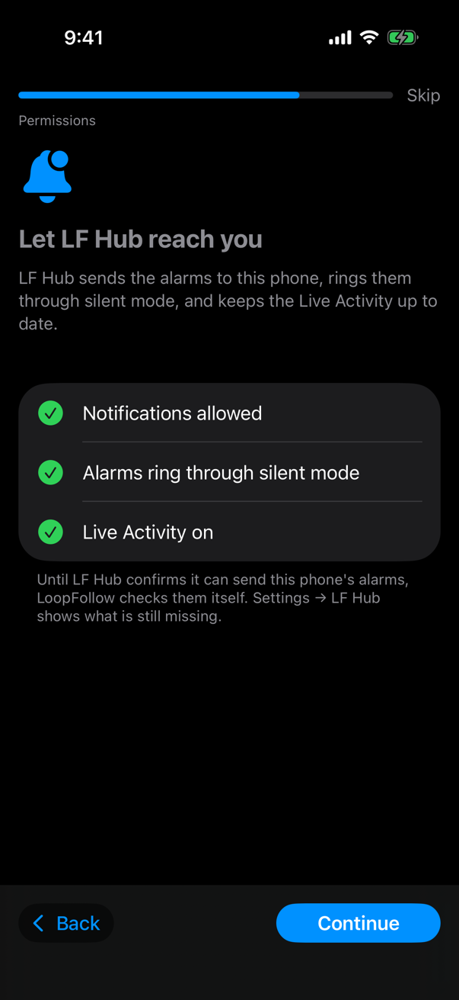
The family member's phone now follows the person with the hub's data source, with the role Member. Its Settings → LF Hub page has the same Ready list as the admin's, and the same test alarm buttons.
Part 4: Manage the phones¶
Every phone that follows the person is listed under Devices on an admin's LF Hub page.
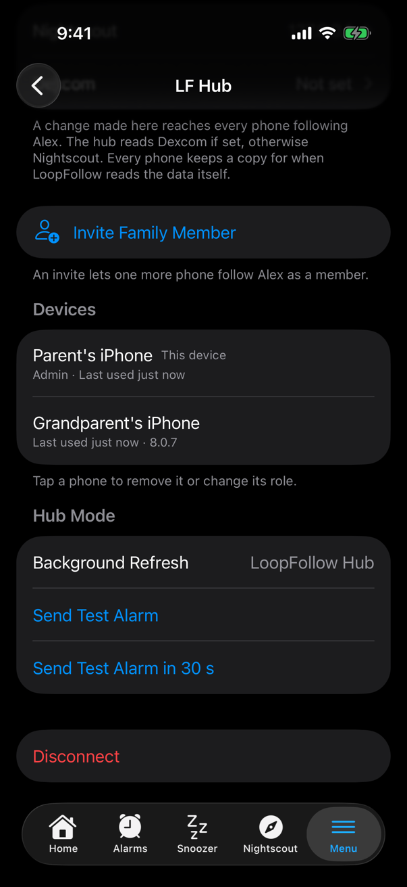
Tap a phone to:
- Make Admin: the phone can then change the data source, invite and manage phones. If the phone you tapped is already an admin, the choice is Make Member. The hub always keeps at least one admin.
- Remove: the hub stops sending to that phone.
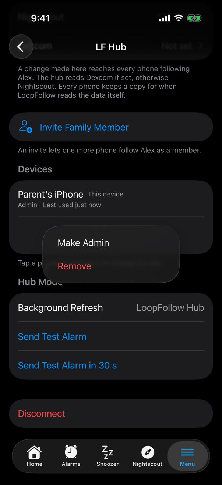
A Push failing warning on a phone in the list means the hub cannot reach it. Open Settings → LF Hub on that phone and look at its Ready list.
Change the data source¶
An admin changes the Nightscout site or Dexcom account under Patient Data Sources on the LF Hub page. The change reaches every phone that follows the person.
Leave the hub¶
Disconnect at the bottom of the LF Hub page takes a phone off the hub. LoopFollow then goes back to checking the alarms by itself.